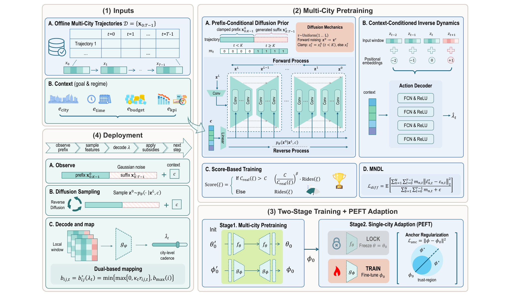
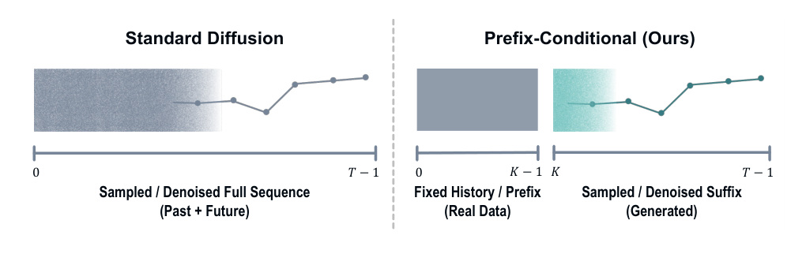
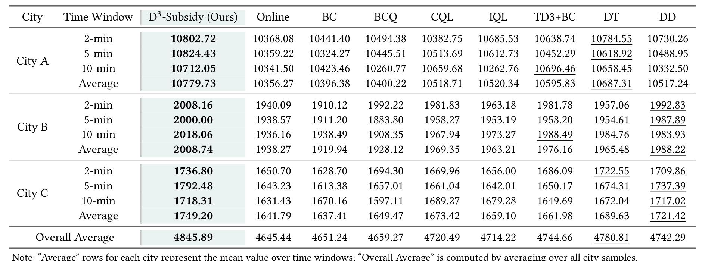
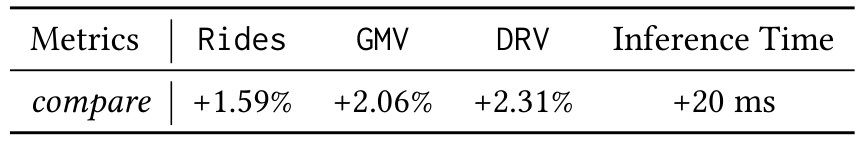

D3-Subsidy：D3-Subsidy: Online and Sequential Driver Subsidy Decision-Making for Large-Scale Ride-Hailing Market
这里精读一篇最近公开的论文《D3-Subsidy: Online and Sequential Driver Subsidy Decision-Making for Large-Scale Ride-Hailing Market》。中文可以叫《大规模网约车市场的在线序列司机补贴决策》。
论文链接：arXiv:2605.20036
作者：Taijie Chen, Rui Su, Siyuan Feng, Laoming Zhang, Hongyang Zhang, Haijiao Wang, Zhaofeng Ma, Jintao Ke
机构/团队：DiDi / HKU / HIT / PolyU
公开日期：2026-05-19，来源：arXiv cs.LG / KDD 2026，arXiv ID：2605.20036。
代码/项目页：未在摘要页核验到代码链接。
0. 导读
D3-Subsidy 虽然不是传统推荐论文，但它解决的是平台型推荐/匹配系统的核心问题：如何在动态市场里用有限激励影响供需。司机补贴不是单个订单上的贪心打分，而是有长期效果、预算约束、城市异质性和低延迟要求的序列决策。论文把扩散模型用于未来轨迹规划，再把城市级控制量映射到细粒度订单-司机激励，是一个很完整的工业决策系统。
这篇论文和每日关注范围的关系很直接：它不是孤立的模型技巧，而是围绕推荐、检索、RAG、Agent 或大模型服务链路里的真实约束展开。下面按问题、方法、图表、实验和工程判断展开。
1. 背景与问题
网约车平台需要同时考虑乘客需求、司机供给、订单完成、GMV、司机收入和补贴成本。补贴过低会导致司机不接单，补贴过高会损害利润并引发策略依赖。传统 per-order optimization 计算成本高，也难以捕捉未来供需连锁反应。
D3-Subsidy 的问题设定是城市级在线序列控制。每个时间窗口根据历史状态和业务目标，输出低维控制信号，再映射到订单-司机对。这里的关键约束包括响应随机冲击、满足 subsidy-rate cap、低延迟执行和跨城市迁移。
这和推荐系统的多目标排序很相似：推荐排序也要在点击、转化、留存、生态和成本之间权衡。D3-Subsidy 提供了一种“先规划全局，再落地局部”的系统范式。
更抽象地看，论文要回答的是一个资源分配问题：在模型能力、上下文信息、候选预算、延迟预算或业务约束都有限时，怎样把计算放到最有价值的位置。这个问题和推荐系统里的召回预算、排序链路、广告出价、用户长期价值建模是一类问题，只是本文落在 平台优化 场景。
2. 核心方法
第一部分是 prefix-conditioned diffusion。标准轨迹扩散会对整段序列加噪和去噪，但在线部署时历史 prefix 已经发生，不能被模型改写。D3-Subsidy 在训练和推理中都固定历史 prefix，只对未来 suffix 采样，避免训练-推理错位。
第二部分是 context-conditioned inverse module。扩散模型生成的是未来市场轨迹，系统再根据上下文把轨迹解码为城市级控制变量 lambda。这样做避免直接在高维订单动作空间扩散，降低决策维度。
第三部分是 Lagrangian-dual-derived mapping。城市级 lambda 需要落到订单-司机 pair 的具体补贴，论文用对偶映射把 subsidy-rate cap 嵌入本地激励计算，不需要每个订单做迭代优化。
第四部分是 multi-city pretraining 和 PEFT adaptation。多城市训练学习通用供需动态，新城市或目标城市再做参数高效适配，同时用 anchor regularization 限制漂移。这个设计直接面向工业多城市部署。
我在阅读时更关注模块之间的接口，而不只是模块名称。本文的共同特点是：把原本隐含在工程经验里的决策变量显式化，例如阈值、预算、缓存、维度、控制信号或刷新间隔。显式化之后，系统才有可能被校准、复现、迁移和线上监控。
3. 图表解读

图 1 是 D3-Subsidy 总框架。左侧输入多城市历史轨迹和上下文，右侧包含前缀条件扩散、逆动力学、部署映射和两阶段训练。它展示了从离线多城市数据到线上城市级决策的完整闭环。

图 2 比较标准轨迹扩散和 prefix-conditioned diffusion。标准扩散会处理整段序列，而 D3 固定已发生历史，只采样未来后缀。这个细节对在线决策很关键，因为历史不可篡改，模型必须尊重部署时的信息边界。

表 1 是离线主结果。D3-Subsidy 在多个城市和 2/5/10 分钟窗口上取得最高整体平均分，超过在线策略和 BC、BCQ、CQL、IQL、TD3+BC、DT、DD 等 baseline，说明扩散规划和对偶映射组合有效。

表 6 是线上 A/B 结果。7 天生产实验中，Rides +1.59%、GMV +2.06%、DRV +2.31%，推理时间增加 20ms。这个表是全文最强证据：方法不是只在离线轨迹上拟合，而是通过真实平台指标验证。
4. 实验与结果
离线实验覆盖多个城市、多个时间窗口和多种 offline RL / imitation baseline，D3-Subsidy 整体平均分最高，并在消融中证明 context、MNDL、prefix 设计都重要。冷启动城市实验显示跨城市迁移优于 online 与 DT。线上 A/B 在 DiDi 生产系统运行 7 天，报告 Rides、GMV、DRV 分别提升 1.59%、2.06%、2.31%，新增推理延迟约 20ms。
这些结果的边界也要看清。论文报告的指标主要证明当前问题定义下的方法有效，但并不等价于所有生产链路都会得到同等收益。尤其是推理系统论文要区分 decoding time、end-to-end latency 和服务端吞吐；RAG/Agent 论文要区分 benchmark score、真实用户满意度和长期维护成本；工业推荐/平台论文要区分离线回放、短期 A/B 和长期生态影响。
5. 我的理解
我认为这篇论文的价值在于把扩散模型从“生成内容”拉到“生成可执行平台策略”。它没有直接生成每个订单的补贴，而是生成未来轨迹和城市级控制，再用确定性映射落地，这样兼顾了模型表达力和线上可控性。对推荐系统来说，这提示我们多目标优化也可以先在全局层面规划长期状态，再通过可约束的局部映射进入排序或激励。
从研究脉络看，这类工作共同说明一个趋势：大模型和推荐系统都在从“单模型效果”走向“系统级可控”。以前我们常把模型能力看成主要变量，现在越来越多论文开始处理部署预算、缓存策略、风险校准、候选预算、跨城市迁移、长期状态记忆等问题。这些问题不一定在排行榜上最耀眼，却更接近真实业务系统里的主要瓶颈。
6. 工程启发与复现建议
复现需要历史城市窗口数据，包括供需状态、补贴率、Rides、GMV、DRV 等 KPI。最小版本可以只做单城市离线：固定历史 K 个窗口，预测未来 T-K 个窗口，再用简单逆模型输出控制量。上线前必须做安全约束仿真，尤其要验证 subsidy-rate cap、极端供需冲击和城市迁移。A/B 设计应至少分层城市、时段和供需状态，避免只在高峰或低峰产生局部收益。
如果要把这篇论文纳入自己的技术栈，我建议先做最小闭环，而不是一次性复现全部实验。先找到一个可观测的瓶颈指标，再实现论文中最核心的决策变量，最后用分桶指标看收益是否来自目标机制。只有当收益在关键分桶上成立，才值得继续投入完整系统实现。
7. 局限与风险
- 7 天 A/B 不能证明长期稳定，司机可能适应补贴策略并改变接单行为。
- 扩散模型随机采样带来策略方差，极端天气、节假日或事件冲击下需要安全兜底。
- 城市级控制变量解释性有限，运营团队可能难以理解某次补贴变化原因。
- 离线数据来自历史策略，存在反事实评估偏差，未曝光策略的效果不能完全由日志推出。
- 补贴策略涉及公平性和平台治理，过度优化 GMV 可能伤害部分司机或乘客体验。
8. 后续跟进
- 跟踪 KDD 2026 正式版，看线上实验和安全约束是否更完整。
- 研究 prefix-conditioned diffusion 在广告预算、库存补货、内容供给调节中的迁移。
- 复现 Lagrangian-dual mapping，理解城市级 lambda 如何约束局部动作。
- 关注长期 A/B 和司机行为适应，避免短期 KPI 提升带来长期策略依赖。
9. 精读补充：平台策略系统的安全闭环
D3-Subsidy 的线上价值来自 A/B，但补贴系统的风险也比普通推荐排序更高。补贴会改变司机行为，司机又会反过来改变平台数据分布。7 天 A/B 能证明短期 KPI 提升，却不足以证明长期均衡稳定。更完整的安全闭环应包括长期留存、司机收入分布、补贴依赖度、乘客等待时长、取消率和城市供需公平性。否则模型可能通过增加短期补贴换取 Rides/GMV，却让司机形成对补贴的策略性等待。
前缀条件扩散的思想很适合在线决策。历史 prefix 是已发生事实，不能被模型重写；未来 suffix 是可规划空间。很多推荐和广告问题也有类似结构：已曝光历史、已消耗预算、已产生库存都不可改变，后续排序、出价和供给调节才可控。把历史固定进生成模型，可以减少训练时“看见未来”或推理时信息边界不一致的问题。这个点比“用了 diffusion”本身更重要。
城市级控制到订单级动作的映射，是论文工程味最强的部分。直接让模型输出每个订单-司机补贴不可行，因为动作空间巨大、约束复杂且延迟高。D3 先输出低维 lambda，再用对偶映射生成局部激励，相当于把学习系统和优化约束分层。推荐系统也可以借鉴：模型负责预测长期价值或目标权重，确定性优化模块负责满足库存、预算、频控、公平性等硬约束。
复现时要避免把 offline score 当成全部证据。补贴策略的反事实评估非常难，因为日志只包含历史策略下的司机响应。若模型选择了历史很少尝试的补贴区间，离线回放无法可靠估计结果。最小实验可以先在模拟器或半合成环境里验证机制，再在真实系统用严格 guardrail 小流量上线。上线时需要设置硬约束：最大补贴率、单司机补贴波动、城市预算、异常供需场景降级和人工运营 override。
10. 失败案例与监控指标补充
D3-Subsidy 的失败案例需要按平台生态来看。第一类是短期 KPI 提升但长期成本上升：司机观察到某些时段补贴更高后，可能推迟上线或选择性接单，导致平台必须持续加码。第二类是空间不公平：模型可能优先优化高需求城区，让边缘区域等待时间变长。第三类是预算边界抖动：扩散采样在供需剧烈变化时输出不稳定控制信号，即使平均 subsidy-rate 合规，也可能在局部窗口造成补贴尖峰。第四类是反事实误判：历史数据里某些高补贴动作很少出现，模型离线评估认为它们有效，但真实上线后司机响应不同。
监控指标应覆盖业务、生态和安全三层。业务层包括 Rides、GMV、DRV、取消率、等待时长和完成率；生态层包括司机收入分布、活跃司机数、区域覆盖、补贴依赖度和乘客体验分；安全层包括 subsidy-rate cap 违规、单司机补贴波动、城市预算消耗速度、异常天气/大型活动降级次数。只有三层同时稳定，才能说明 D3-Subsidy 是平台策略优化，而不是单一 KPI 优化。对推荐系统的迁移也一样：长期价值模型必须配合生态指标，否则容易把短期点击或转化当成全部目标。
11. 复现实验口径补充
复现 D3-Subsidy 时，最难的是构造可信的环境反馈。普通监督学习可以用 held-out label 验证，但补贴策略改变后，司机和乘客行为都会变化，历史日志不能覆盖所有动作。一个折中方案是先建立半仿真环境：用历史数据拟合司机接受率、订单完成率和补贴敏感度，再让不同策略在仿真器里交互。虽然仿真不等于真实世界，但它能暴露策略震荡、预算超限和异常供需下的失败模式，比直接离线回放更接近序列决策。
上线实验也要分阶段。第一阶段只做 shadow mode，让 D3 输出控制信号但不真正影响补贴，用来比较它和在线策略的差异、波动范围和 cap 风险。第二阶段小流量灰度，限制最大 uplift/downlift，并设置人工运营 override。第三阶段才做完整 A/B，并且至少跨工作日、周末、天气和大型活动周期。若只在 7 天内看到 GMV 提升，还需要继续观察司机活跃、补贴依赖和乘客等待时长，避免把短期供给刺激误判为长期策略改进。
12. 推荐与广告系统迁移视角
把 D3-Subsidy 迁移到推荐或广告系统时，不能简单把“补贴”替换成“曝光”或“出价”。更合理的类比是把城市级 lambda 看成全局策略旋钮：它决定某类供给、某类用户、某个区域或某个时间窗口的资源倾斜，然后由排序、竞价或召回模块把这个旋钮转成局部动作。这样做的好处是业务方可以审计全局策略，工程系统也能在局部动作上执行硬约束。
广告预算分配是最直接的落点。历史 prefix 对应已消耗预算和已观测转化，未来 suffix 对应接下来几个时段的投放状态，逆动力学模块可以输出预算平滑、出价倍率或流量分配系数。推荐供给治理也类似：如果某类内容供给不足或用户体验下降，模型可以规划未来状态，但最终曝光仍由受约束的排序层执行。这里真正值得借鉴的是“学习规划 + 确定性约束映射”的分工，而不是扩散模型这个单点技术名词。
实际落地时还需要解释层。运营团队通常不会接受一个黑盒 lambda 直接改变大额预算，因此系统要把控制信号拆成可读原因：供需缺口、转化弹性、预算风险、历史波动和约束触发。只有当全局规划、局部映射、解释审计和降级策略同时存在，D3-Subsidy 这类方法才适合进入生产链路。